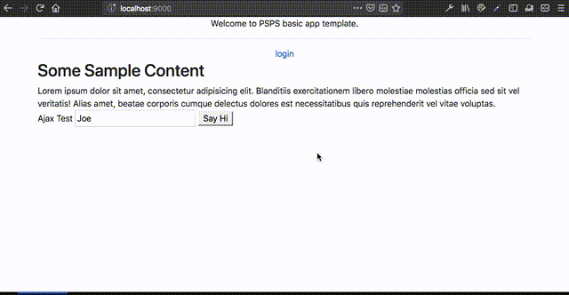

PSPS
A Play-Scala-PostgreSQL-Slick stack for web applications. Created by CodeWorth.io and the Play Framework community.
Overview
What is this?
PSPS is a seed project for websites that have user accounts, a public side, and database connectivity. It is targeted at small-to-medium sites, that can use a single main monolith part. In other words, if you need a microservice-based cloud native hyper-distributed app, that’s not it. If you need a website that can be hosted on a VPS, have a public and a back-office parts, and scale up nicely, PSPS is a good start.
PSPS is based on our experience with Play for creating web applications. Some of these sites handle thousands of visitors each month, sitting on a $4/month VPS (from digitalFyre, BTW). It works for us (and on our machines!), we hope the play community will find it useful too.
Why
Play framework is a very powerful, and a very non-opinionated, web platform. It’s a pleasure to use, but we found ourselves implementing standard functionality over and over again. Thus, we decided to just write it once, properly (we hope) and then fork when needed.

Why not Sub-Class Play?
Sure, that’s the textbook way of doing it. But it’s impractical, especially as Play goes through an evolution of its own (and a non-backward-compatible one, too). Additionally, Play is large enough to have a non-trivial learning curve. Which is added to Scala’s non-trivial learning curve. That’s enough curves.
Who
CodeWorth.io (as in: “us”) is a software studio that creates custom software systems. We specialize in complex systems (such as scientific software) or systems that have positive impact (or both). When we develop web systems, and are free to choose a technology stack, we tend to use Play+Scala.
How
PSPS uses the following technologies:
-
The Scala variant of Play Framework.
-
Slick As the database connectivity layer
-
User-based access control, using Deadbolt.
-
Custom code and templates
What does PSPS have, out of its proverbial box?
-
User accounts (including “forgot password” and “invite user” flows, profile editing page, and logged-in only sections. Users can log on using their username. or email. Database constraints prevent duplicate entries of both emails and usernames.)
-
Logged-in Template (complete with user account, logout button, etc.)
-
Localization support using standard Play localization.
-
Javascript utilities.
-
Convenience methods for template rendering.
-
Template for social media page metadata.
-
And more — see the sections to the left.